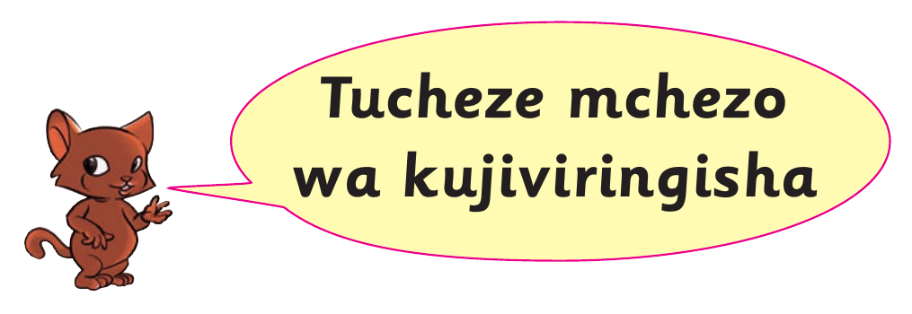
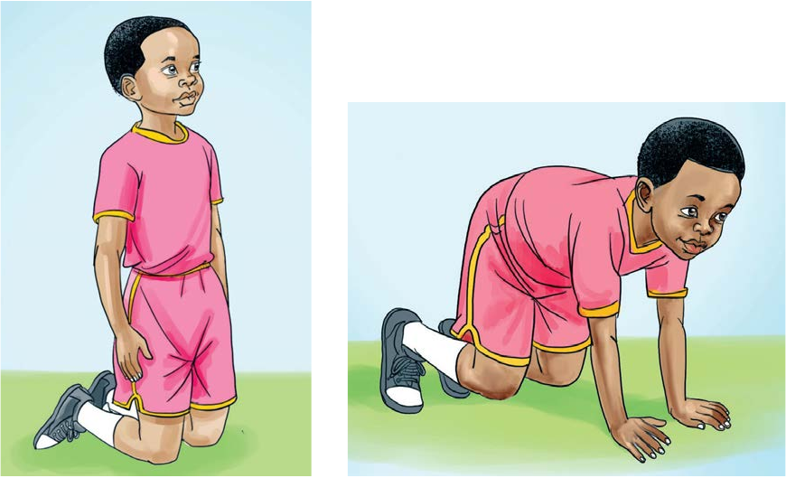
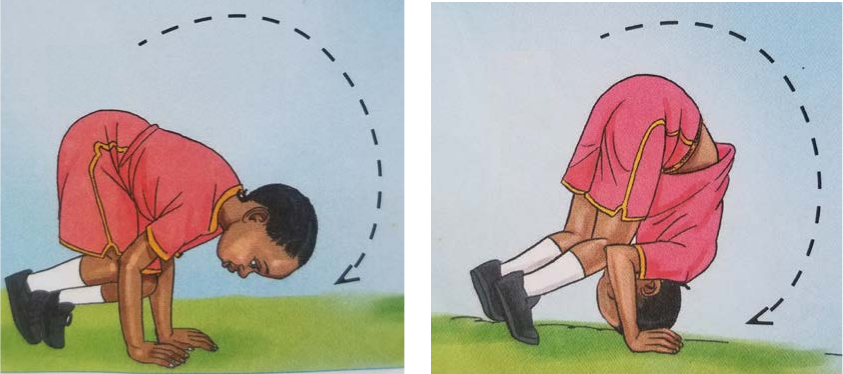
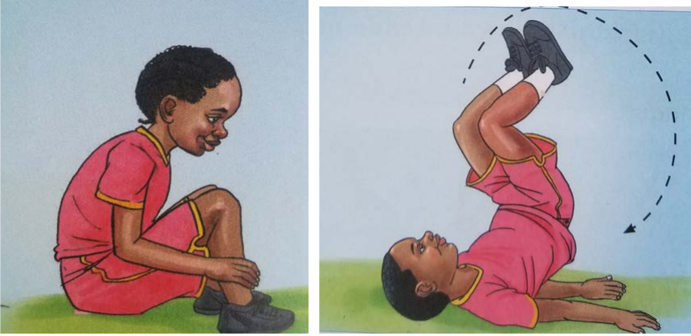

Tucheze mchezo wa kujiviringisha

Kuna namna mbili za kujiviringisha
1. Kujiviringisha kwa kwenda mbele.
2. Kujiviringisha kwa kurudi nyuma.
Kujiviringisha kwa kwenda mbele
Hatua za kufuata
1. Piga magoti.
2. Inama na weka mikono chini.

3. Inua kiuno.
4. Weka kichwa chini na jisukume kwenda mbele.

5. Jiviringishe na kutua kwa kutanguliza mikono.
6. Jiinue kwa mikono na kukaa.

Rudia kufuata hatua hizo
Shughuli ya kufanya 9
Fanya zoezi la kujiviringisha kwa kwenda mbele.